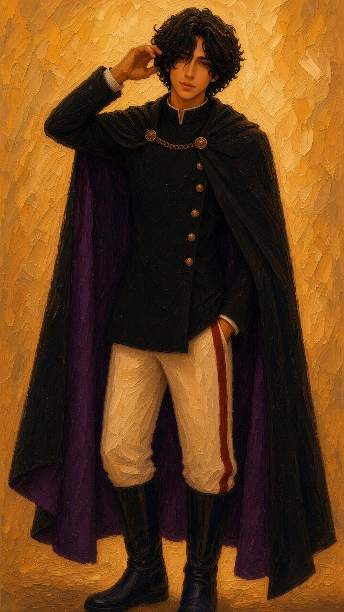
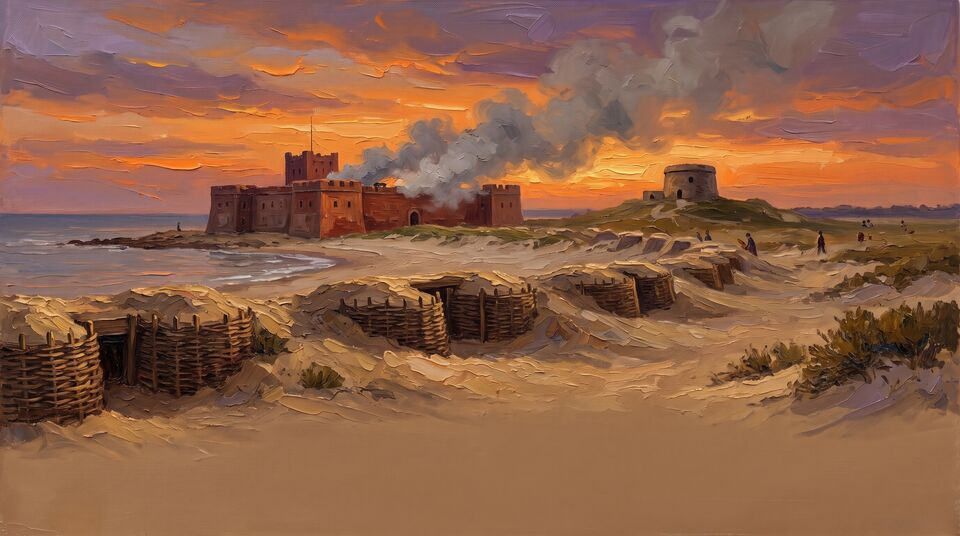

「朕是血櫻。今天不背年代，我們只問一個問題：如果你是當時的人，你會怎麼選？」
角色、形象、聲音、音樂、插圖皆為 AI 生成之虛構內容字幕已燒在畫面裡。插圖是 AI 畫的示意圖，不是精確的歷史復原。
還沒作答。三題都答完，朕給你打分數。
以第一人稱「帶你走進歷史」的虛擬講者，做成 1–2 分鐘的歷史小短片。觀眾是對歷史有興趣、但覺得課本太枯燥的高中生與一般大眾。
冷靜、愛說故事、對歷史很有熱情；嘴上偶爾毒舌，但很照顧聽眾，看到有人聽不懂會換個說法再講一次。
黑色捲髮；黑色高立領官服、五顆銅扣；黑色披風、深紫內裡，兩顆圓扣以金鍊相連；白長褲配紅色側條、黑色長靴。
開場自稱「朕」，有皇帝氣勢；進入講解就改成白話「我們」，常用現代比喻。句子短、一次只講一個重點，講完會問聽眾一個小問題。

角色主題曲（Lyria 3 Pro 生成，53 秒）
各書對締約、交城日期記法略有出入（2 月 1 日締約；交城有 2 月 9 日、2 月 10 日兩說），影片只說到「1662 年 1 月」為止。